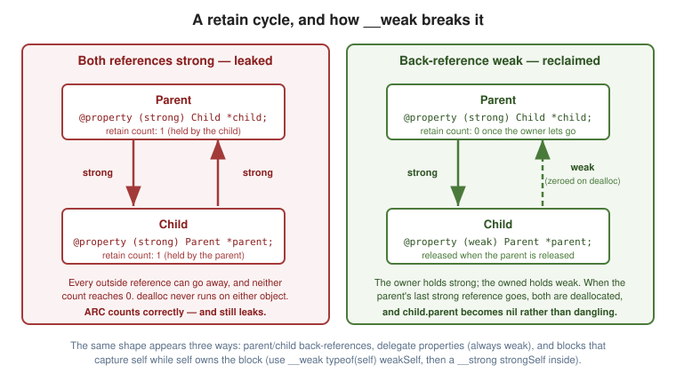

Automatic Reference Counting
|
This content was generated with the assistance of AI and should be verified against the official documentation before being relied on in production. |
ARC is compile-time automation of the reference-counting rules described in
Manual Retain Release. The compiler
analyses the lifetime of every object pointer and inserts the retain, release and autorelease calls you
would otherwise have written — on every path, including early returns and exception unwinds. It is not
garbage collection: there is no background collector, no pauses and no nondeterminism. Deallocation happens at
exactly the moment the last strong reference disappears.
What ARC Does and Does Not Do
ARC does:
-
Insert retain/release/autorelease for every Objective-C object pointer.
-
Optimise away pairs that provably cancel, making ARC code typically faster than hand-written MRR.
-
Zero
__weakreferences automatically when their object is deallocated. -
Emit
[super dealloc]and release your ivars for you. -
Enforce the naming conventions, so it can reason about ownership across method boundaries.
ARC does not:
-
Break retain cycles. Two objects that strongly reference each other are never deallocated. This is the one memory bug ARC does not solve, and the rest of this page is largely about avoiding it.
-
Manage Core Foundation objects (
CFReleaseis still yours),malloc/free, or file descriptors and other non-memory resources. -
Manage
structfields containing object pointers without explicit qualification. -
Make code thread-safe.
Under ARC you may not call retain, release, autorelease or retainCount at all — they are compile
errors — nor override retain/release. @autoreleasepool remains, and remains occasionally necessary.
Ownership Qualifiers
Every object pointer variable has one of four lifetime qualifiers. __strong is the default, so most code
never writes one.
| Qualifier | Behaviour |
|---|---|
|
The default. Keeps the object alive; assigning releases the old value and retains the new one. |
|
Does not keep the object alive, and is set to |
|
Does not keep the object alive and is not zeroed — it dangles after deallocation. Only for the few classes that do not support weak references, or for measured performance work. |
|
Used for out-parameters passed by reference ( |
__strong Person *owner = [[Person alloc] initWithName:@"Ada"]; // "__strong" is redundant
__weak Person *observer = owner;
NSLog(@"%@", observer); // the object
owner = nil; // last strong reference gone -> deallocated
NSLog(@"%@", observer); // (null) -- automatically zeroed|
Demonstrate this with an instance of your own class, not a short |
Note the qualifier’s position for pointer-to-pointer types — it binds to the inner pointer:
NSError * __autoreleasing *errorPtr; // correct
// __autoreleasing NSError **errorPtr; // means something elseThe property attributes strong, weak, assign/unsafe_unretained and copy map onto these qualifiers
exactly — see
Properties and Encapsulation.
A Critical __weak Subtlety
A __weak variable can become nil between two statements, because another thread may have released the
object in between. Read it once into a strong local before using it more than once:
// Risky: weakObj may be non-nil at the check and nil at the call.
if (weakObj) {
[weakObj doSomething];
}
// Correct: one atomic load into a strong reference.
__strong typeof(weakObj) strongObj = weakObj;
if (strongObj) {
[strongObj doSomething];
[strongObj doSomethingElse]; // guaranteed to be the same live object
}This is the same "weak/strong dance" that blocks require — see Blocks.
Method Families and Naming Conventions
ARC decides who owns a returned object from the method’s name. A method whose first word is alloc,
new, copy, mutableCopy or init belongs to an ownership family and returns an object the caller owns;
anything else returns an autoreleased object.
This is why naming is a correctness issue, not a style one:
- (NSString *)newIdentifier; // "new..." family: caller takes ownership
- (NSString *)generatedIdentifier; // not a family: returns autoreleasedIf you must break the convention — usually when wrapping a C API — annotate explicitly:
| Attribute | Meaning |
|---|---|
|
Returns an object the caller owns, despite the name. |
|
Returns an autoreleased object, despite an ownership-family name. |
|
Returns a pointer into the receiver’s storage; keep the receiver alive. |
|
The method takes ownership of this argument. |
|
The method takes ownership of the receiver. |
- (NSString *)newString NS_RETURNS_NOT_RETAINED; // in the `new` family, but autoreleased
- (void)takeOwnershipOf:(NS_CONSUMED id)object;init methods have two further rules ARC enforces: they must return instancetype or id, and they must
assign self = [super init…] — see
Classes and Objects.
Retain Cycles
A cycle is any loop of strong references. ARC counts correctly; the count simply never reaches zero.

The Three Shapes
1. Parent and child.
@interface Parent : NSObject
@property (nonatomic, strong) Child *child; // parent owns child
@end
@interface Child : NSObject
@property (nonatomic, weak) Parent *parent; // back-reference: weak
@endThe rule is directional: the owner holds strong, the owned holds weak.
2. Delegates. The same shape, which is why every delegate property is weak:
@property (nonatomic, weak) id<MyDelegate> delegate;3. Blocks capturing self. The most common cycle in modern code:
// Cycle: self owns the block (copy property), the block retains self.
self.completion = ^{ [self refresh]; };
// Broken:
__weak typeof(self) weakSelf = self;
self.completion = ^{
__strong typeof(weakSelf) strongSelf = weakSelf;
if (!strongSelf) { return; }
[strongSelf refresh];
};Not every captured self is a cycle — dispatch_async, UIView animation blocks and enumeration blocks are
all owned by something else and release the block after running. Applying weakSelf where it is not needed
causes the opposite bug: an object deallocated before its callback fires. See
Blocks.
NSTimer deserves a special mention: a repeating timer holds its target strongly, so weak on your
side does not help. Invalidate it explicitly, or use the block-based
+scheduledTimerWithTimeInterval:repeats:block: with a weak capture.
dealloc Under ARC
- (void)dealloc {
// Release only what ARC does not know about:
[[NSNotificationCenter defaultCenter] removeObserver:self];
[self removeObserver:self forKeyPath:@"state"]; // KVO observers
[_timer invalidate];
CFRelease(_cfObject); // Core Foundation
free(_buffer); // malloc'd memory
// No ivar releases -- ARC does those.
// No [super dealloc] -- ARC emits it. Writing it is a compile error.
}Access ivars directly (_timer, not self.timer) and never let self escape from dealloc — registering
it somewhere at this point resurrects a half-destroyed object.
@autoreleasepool
Still required in two places, exactly as under MRR:
// A loop creating many temporaries.
for (NSInteger i = 0; i < 1000000; i++) {
@autoreleasepool {
NSString *s = [NSString stringWithFormat:@"row %ld", (long)i];
[self process:s];
} // drained each iteration -- flat memory use
}
// A thread you created yourself: only the main run loop provides one for free.
- (void)workerBody {
@autoreleasepool {
// … all work …
}
}If a batch job’s memory climbs steadily and Instruments shows autoreleased temporaries, a missing inner pool is almost always the reason.
Bridging Casts with Core Foundation
ARC manages Objective-C objects, not Core Foundation ones. At the boundary you must say what happens to ownership, and the cast is how you say it.
| Cast | Function equivalent | Ownership |
|---|---|---|
|
— |
No transfer. A borrowed reference; neither side changes its claim. |
|
|
ARC → you. You must |
|
|
You → ARC. Do not |
NSString *s = @"Hello";
// Borrow: just reading through a CF API.
CFStringRef borrowed = (__bridge CFStringRef)s;
CFIndex len = CFStringGetLength(borrowed); // do NOT CFRelease(borrowed)
// Hand ownership to a CF API that will release it.
CFStringRef owned = (__bridge_retained CFStringRef)s;
CFRelease(owned); // your responsibility now
// Take ownership of something a Create/Copy function returned.
CFStringRef created = CFStringCreateWithCString(NULL, "hi", kCFStringEncodingUTF8);
NSString *managed = (__bridge_transfer NSString *)created; // ARC will release it
// do NOT CFRelease(created)The decision procedure is CF’s own Create Rule: if the function’s name contains Create or Copy, you
own the result, so use bridge_transfer (or CFBridgingRelease) to hand it to ARC. Otherwise it is
borrowed (the Get Rule) and bridge is correct. CFBridgingRetain/CFBridgingRelease do the same jobs
in function form and are often more readable in dense code.
See also Objective-C++ and C Interoperability.
Object Pointers in C Structs
Modern Apple Clang does accept an object pointer as a struct field — such a struct becomes a non-trivial C struct, and the compiler emits copy and destroy helpers so that ordinary declaration, assignment and scope exit manage the field’s lifetime correctly:
struct Managed {
NSString *name; // fine: ARC manages this field
};
struct Manual {
__unsafe_unretained NSString *name; // you manage the lifetime yourself
};What ARC cannot do is manage such a struct through raw memory. malloc hands back uninitialised bytes
with no helper ever running, and memcpy/free bypass the helpers entirely, so a strong field in a
heap-allocated struct is never retained or released:
struct Managed *s = malloc(sizeof *s); // no copy/destroy helper runs
s->name = @"Ada"; // not retained -- ARC never saw this storage
free(s); // not released -- leaked or danglingThat is the case where __unsafe_unretained and a documented, hand-managed lifetime are required.
The right answer is nearly always a small Objective-C class, or an NSValue/NSDictionary, rather than the
qualified struct.
Per-File ARC
ARC is a per-translation-unit setting, so mixed projects are normal:
clang -fobjc-arc MyClass.m # ARC on (the project default)
clang -fno-objc-arc LegacyClass.m # ARC off for this one fileIn Xcode, set -fno-objc-arc (or -fobjc-arc) as a per-file flag under Build Phases ▸ Compile Sources.
ARC and MRR files link and interoperate freely, because they share the same ownership conventions.
__has_feature(objc_arc) lets a header adapt:
#if __has_feature(objc_arc)
#define MY_RELEASE(x) do { (x) = nil; } while (0)
#else
#define MY_RELEASE(x) do { [(x) release]; (x) = nil; } while (0)
#endifDiagnosing Leaks
| Tool | Finds |
|---|---|
Clang Static Analyzer ( |
Leaks, over-releases and mismatched bridging casts without running the code. Run it routinely — it is the cheapest of these by far. |
Instruments ▸ Leaks |
Blocks of memory with no remaining references — classic leaks, including cycles. |
Instruments ▸ Allocations with Mark Generation |
Steady growth. Mark a generation, perform an operation, return to the starting state, mark again: anything still alive in the new generation is suspect. The best tool for finding retain cycles. |
Xcode Memory Graph Debugger (the graph icon while running) |
A live object graph with cycles called out explicitly and purple |
Zombies (Instruments, or |
Messages to deallocated objects — the over-release side, which still occurs at the CF boundary. |
Address Sanitizer ( |
Use-after-free and buffer overflows in the C parts of your code. |
The practical routine: run the static analyzer on every build, use the Memory Graph Debugger when an object’s
dealloc does not fire, and reach for Instruments' Allocations when memory grows without an obvious culprit.
See Build and Tooling.
See Also
-
Manual Retain Release — the rules ARC automates.
-
Blocks — block capture and the weak/strong dance.
-
Properties and Encapsulation —
strong,weakandcopyas property attributes. -
Build and Tooling — the analyzer, sanitizers and Instruments.